使用 Docker、Kubernetes 和 Azure DevOps 实现 DevOps
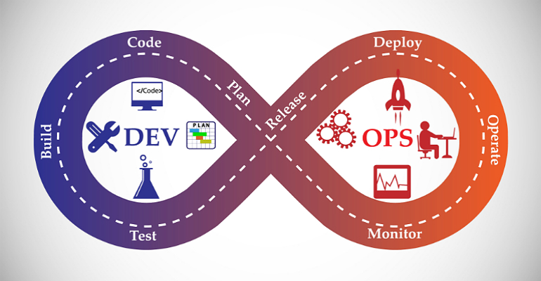
这篇文章，我们将会分解关于你想了解的 DevOps 的所有知识，因而你可以着手构建自己的 CI/CD 流水线。
这篇文章，我们将注意力集中于 DevOps 上。
什么是 DevOps？它跟 Agile 有什么不同？有哪些受欢迎的 DevOps 工具？在 DevOps 中，Docker、Kubernetes 和 Azure DevOps 又是充当了什么样的角色。让我们从一个简单的使用场景开始这次的内容。
你将会学习
什么是 DevOps？
为什么我们需要 DevOps？
DevOps 和 Agile 有什么区别？
有哪些重要的 DevOps 工具？
Docker 怎样能够帮助到 DevOps？
Kubernetes 怎样能够帮助到 DevOps？
Azure DevOps 怎样能够帮助到 DevOps？
什么是持续集成，持续交付？
什么是基础设施即代码？
Terraform 和 Ansible 怎样能够帮助 DevOps？
免费课程 - 10 步速成
什么是 DevOps？
与围绕软件开发的大多数流行语一样，关于 DevOps 没有公认的定义。
简单来说可以用下面这两段文字描述，往复杂了说足以在书里面写一整页。
DevOps 是文化理念、实践、工具的组合，能够让一个组织提升高效交付应用程序和服务的能力。- Amazon Web Services（AWS）
DevOps 是一个组织内部的跨学科协作的概念，通过实现自动化交付新的软件版本，从而能够确保它们的正确性和可靠性。- L Leite
与其尝试对它做定义，不如让我们来了解下软件开发是怎样一步步发展到 DevOps 的。
瀑布模型
软件开发的头几十年都是围绕瀑布模型开展的。
瀑布软件开发模型与实际开发房地产项目有异曲同工之处 – 比如，建造一座令人惊叹的桥梁。
你需要分多个阶段构建软件，这些阶段可以持续几个星期到几个月不等。
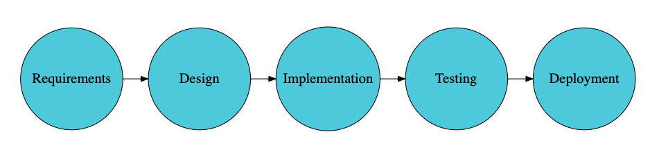
大多数的瀑布项目中，企业需要数月才能等到一个能运行的应用程序版本。
构建出色软件产品的关键因素
使用瀑布模型几十年后，我们意识到开发出色软件的一些关键因素:
沟通
反馈
自动化
沟通的重要性
软件开发是一项包含了多重技巧的跨学科的工作。

人与人之间的沟通对软件项目的成功起到了至关重要的作用。
在瀑布模型当中，我们尝试通过准备多达 1000 页的关于需求、设计、架构以及部署的文档来增强沟通。
但是，使用一段时间后，我们体会到
团队内部增强沟通的最好方法，是团队的凝聚力。以及在同一团队获取一系列技能的能力。
跨部门的团队（有更多技能的）工作更出色。
尽快反馈的重要性
尽快得到反馈是重要的。构建出色的软件就是需要尽快得到反馈。
我们开发的软件能够符合市场的期望吗？
你不能等好几个月了才得到反馈。你想要尽可能快的知道。
你的应用如果部署到生产环境会有问题吗？
你不想等过了好几月才知道这个结果。你肯定想知道的越快越好。
尽早发现问题，修复起来就越简单。
我们发现出色的软件研发团队可以很快的得到反馈。我所开发的功能，我需要尽可能早的知道我是否正朝着正确的方向做这些事情。
自动化的重要性
自动化是非常重要的。软件开发包括了很多方面的活动。手动做这些事情效率低并且容易出错。我们了解到寻求引入自动化的机会至关重要。
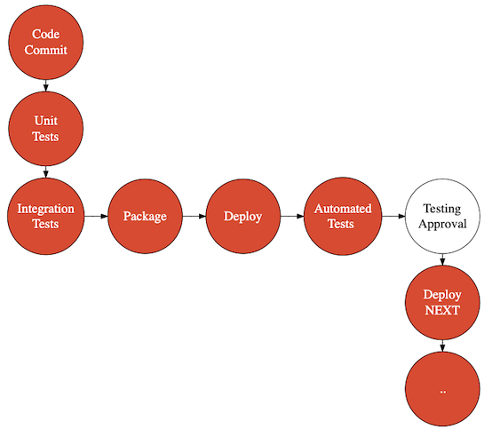
在了解了怎样开发出色的软件的关键因素之后，让我们看看我们是怎样发展到 Agile 以及 DevOps 的。
发展至 Agile
Agile 是我们提升团队间的沟通，获取反馈以及引入自动化实施到我们学习内容的第一步。

Agile 将业务与研发团队整合到一个团队当中，在称为 Sprint 的小型迭代过程中开发出色的软件。
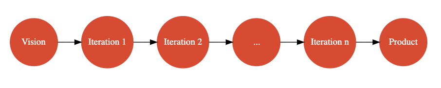
不同于在每次开发阶段耗费数周乃至数月，Agile 着眼于几天甚至一天内的整个开发周期中处理称为用户故事的小需求。
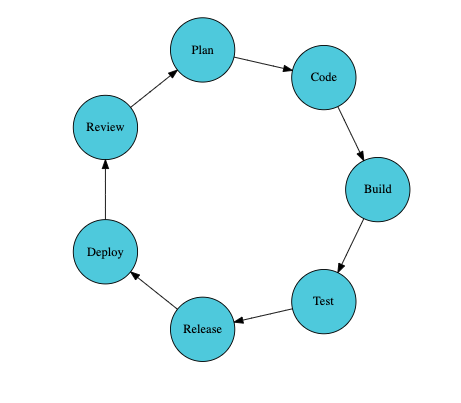
Agile 是怎样促进团队间沟通的呢？
Agile 将业务与研发团队整合到一起。
业务团队负责定义开发什么样的产品。有什么样的需求？
开发团队负责开发符合这些需求的产品。开发团队成员包括设计、编码、测试以及打包应用程序的人员。
在 Agile 中，业务代表即产品经理，总是会出现在团队中，让团队明确具体的业务目标。
当开发团队没有很好的理解需求或者是在一条错误的方向上时，产品经理会帮助他们进行修正以帮助他们重新回到正确的轨道上。
结果: 团队最终开发出来的产品也就是市场最终需要的产品。
另一项重要的因素就是 Agile 团队有跨功能的技能: 编码技能（前端，API 还有数据库）、测试技能、以及业务技能。这些促进了需要一同工作并且开发出色软件的人们之间的沟通。
Agile 和 Automation
Agile 团队专注于 Automation 领域的哪方面呢？
软件产品有多种缺陷:
功能缺陷意思就是产品不能如预期那样正常运行。
技术缺陷会造成软件维护困难。举个例子，代码质量问题。
总的来说，Agile 团队着眼于使用自动化来尽早的发现技术上以及功能上的缺陷。
Agile 团队着眼于自动化测试。编写出色的单元测试来测试你的方法和类。编写出色的集成测试来测试你的模块和应用。Agile 团队同样非常关注代码质量。使用诸如 SONAR 这样的工具可以用来评估应用程序的代码质量。
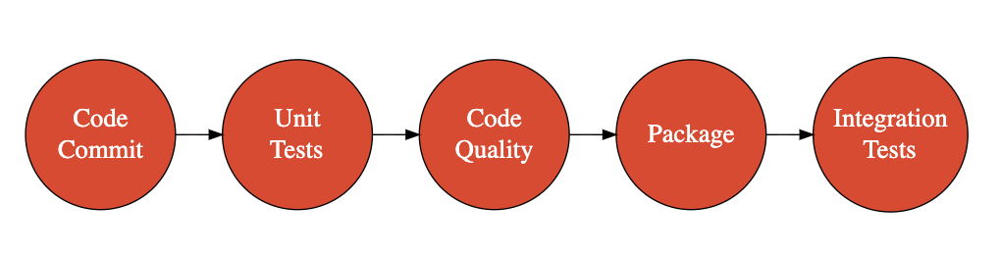
如果你有出色的自动化测试和出色的代码质量检查是否就够了呢？你可能想经常的运行它们。Agile 团队着眼于持续集成。你提交了一次变更到版本控制系统。运行单元测试、自动化测试和代码检查。这些都在持续集成流水线自动运行。在 Agile 早期阶段，比较流行的 CI/CD 工具是 Jenkins。
Agile 是如何提升快速反馈的呢？
一个重要的因素是市场不需要等待好几个月看到最终产品。每次迭代的尾声，会给利益相关者包括架构和业务团队演示产品。得到的所有反馈会作为下一次迭代优先处理的用户故事。结果: 最终团队开发的软件就是市场需要的。
另外一项可以迅速反馈的关键因素是持续集成。比如我提交一些代码到版本控制系统。不出 30 分钟，如果代码导致了单元测试和集成测试失败我就可以得到反馈。对不符合代码质量标准或者没有足够单元测试代码覆盖率的代码同样我也会得到反馈。
Agile 是成功的吗？当然。通过专注于提升市场和开发团队之间的沟通以及尽早发现问题，Agile 将软件开发提升到下一个等级。
就我个人而言，在 Agile 模型中与一些让人激动的团队一起工作是一个非常美妙的体验。软件工程，对我来说意味着从需求到最终应用程序使用中间付出的所有努力的结果，第一次，觉得编程是一种享受。
但是，发展的脚步停止了吗？并没有。
新的挑战出现了。
微服务架构的转变
当我们尝试转向微服务架构，我们开始开发一些小型 API 而不是大型的应用程序。
带来的新的挑战是什么呢？
运维变得更重要了。不同于一个月发布一个版本，每周都要发布上百个小型的微服务。调试微服务的问题以及搞清楚微服务之间如何工作的变得非常重要。
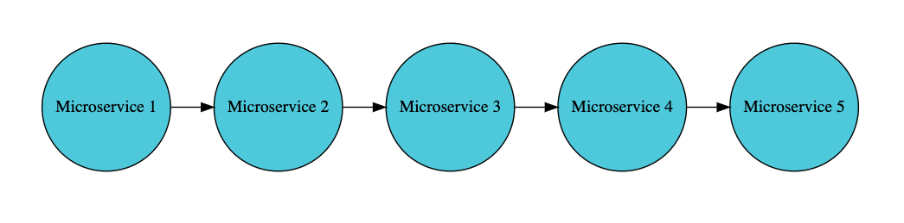
那时软件开发诞生了一个新的流行语。DevOps。
DevOps 的出现
DevOps 主要聚焦哪些方面呢？
DevOps 主要聚焦提升开发团队与运维团队之间的沟通。
我们怎样能让开发更容易一些？
怎样让运维团队的工作在开发团队那里看起来更透明？
DevOps 是如何提升团队之间沟通的？
DevOps 拉近了运维团队与开发团队之间的距离。
在更成熟的公司内，运维与开发团队如同一个团队。他们开始分享共同的目标，彼此也能了解对方面临的挑战。
一些刚开始转向 DevOps 的企业，运维团队的代表会参与到 Sprint 中 – 站会以及回顾都会参与。
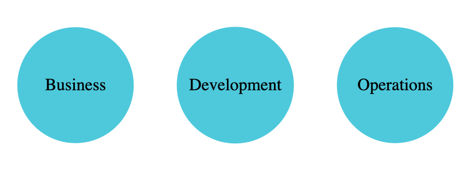
DevOps 会专注于自动化的哪些方面呢？
除了 Agile 专注的领域之外（持续集成和自动化测试），DevOps 团队会专注于帮助实现一些运维团队活动的自动化，比如配置服务器、服务器上配置软件、部署应用以及监控生产环境。有一些关键术语它们是持续部署、持续交付以及基础设施即代码。
持续部署是指的在测试环境上部署新的版本。甚至在诸如 Google、Facebook 这样成熟的公司，持续交付每天都或许可以部署上百个版本到生产环境当中。

基础设施即代码则是将你的基础设施同你的应用程序代码等同对待。你利用配置以自动化的方式创建了这些基础架构（服务器、负载均衡器、还有数据库）。你需要对你的基础架构做到版本控制，这样你可以以后追踪基础架构的变更。

DevOps 是怎样提升立即反馈的呢？
DevOps 将运维团队和开发团队整合到一起。因为运维和开发团队是一个团队的组成部分，整个团队都能够知晓跟运维和开发团队相关的挑战。
任何操作的问题都能得到开发人员的注意。
上线软件的任何挑战都会尽早得到运维团队的注意。
DevOps 鼓励持续集成、持续交付以及基础设施即代码。
因为使用持续交付，如果我产生了一次代码变更或者是一次配置变更或许会阻断测试或者是一个暂存环境，我会在几个小时内知道。
因为使用基础设施即代码，开发人员可以自行配置环境、部署代码、在不需要运维团队帮助的前提下自行发现问题。
虽然我们谈论 Agile 和 DevOps 是让事情变得简单的两种不同的事物，但事实上，对于 DevOps 是什么意思仍没有一个公认的定义。
我把 Agile 和 DevOps 看做帮助我们提高如何开发出色软件的两种阶段。它们不是竞争关系，但是一起使用能够帮助我们构建令人惊叹的软件产品。
就我而言，Agile 和 DevOps 一起使用的目的具体来说是
提升市场、研发和运维团队的沟通
减缓自动化的痛点。在这个课程的奇妙旅程中我们将会讨论单元测试、集成测试、代码质量检查、持续集成、持续交付、基础设施即代码以及通过容器标准化。
一个 DevOps 故事
话说有这样一个令人惊叹的故事:
你是团队中的开发之星，然后你需要快速修复一个 bug。你要到 GitHub 上去看看！
快速的检出了项目代码。
快速的创建了本地环境。
创建了一个变更。也测试完了。然后更新了单元测试和自动化测试。
提交了。

你查收到一封邮件说是它已经部署到了 QA。
一些集成测试在自动运行。
你的 QA 团队收到一封请求测试的邮件。他们开始手工测试然后通过。
你的代码在几分钟内上线到生产环境。
你或许为想这事一个理想的场景。但是，你需要知道的是这就是在诸如 Netflix、Amazon 以及 Google 这些创新公司的日常！
这就是 DevOps 的故事。
DevOps = Development + Operations
DevOps 是软件开发的一个自然的进化。DevOps *不仅仅*是一个工具，一个框架或者仅仅就是自动化而已。它是这些东西的组合。
DevOps 专注于人、流程和产品。DevOps 中的人指的是文化以及创造一个出色的心态 – 一种促进开放交流以及快速反馈的文化，一种创造高质量软件的文化。
Agile 则帮助在市场和开发团队之间架设桥梁。开发团队了解市场的优先级同市场一道传递最有价值的故事。然而，Dev 和 Ops 并没有保持一致。
他们有不同的目标。
Dev 团队的目标是将尽可能多的功能添加到产品中。
Ops 团队的目标是保持生产环境越稳定越好。
如你所见，如果产品进入市场这么难的话，开发和运维团队就没法达成一致。
DevOps 目标是让 Dev 和 Ops 团队通过一些相同的目标凝聚到一起。
Dev 团队与 Ops 团队一同工作能够了解和解决运维中遇到的挑战。Ops 团队是 Scrum 团队的一部分能够了解到开发功能的一些事情。
我们怎样能让其实现呢？
打破 Dev 和 Ops 之间的隔阂！
Dev Ops 在一起 - 情景 1
在有成熟的 DevOps 企业里，Dev 和 Ops 作为 scrum 团队的组成部分彼此分担责任。
Dev Ops 在一起 - 情景 2
然而，如果你处于转至 DevOps 的初始阶段，怎样让 Dev 和 Ops 团队有共同的目标并且一起工作呢？
这里有一些你需要去做的事情:
第一件事你可以开始着手做的就是让运维团队分享一些工作任务给开发团队。例如，开发团队可以负责产品上线的一周后新版本的发布工作。这能帮助开发团队了解到运维团队在上线新版本面对的挑战并且可以协助他们探索更好的解决方案。
另一件你需要做的就是将一名运维团队的成员参与到 Scrum 日常活动中。让他们参加团队的站会以及总结会。
下一件你可以做的事情就是让运维团队面临的问题能更清晰的呈现给 Development 团队。当你在运维方面遇到问题的时候，可以让开发团队中的一部分成员成为解决方案团队的一部分。
不管你要做哪一件事情，找到一条打破开发和运维团队共同工作的隔阂的方法。
因为自动化另一个有趣的情景出现了。通过使用基础设施即代码以及 开发自行配置，你可以创造一个不论开发还是运维都能理解的语言 - 代码。细节会在下面的几个步骤中再做说明。
一个 DevOps 使用场景
思考下面的图片:
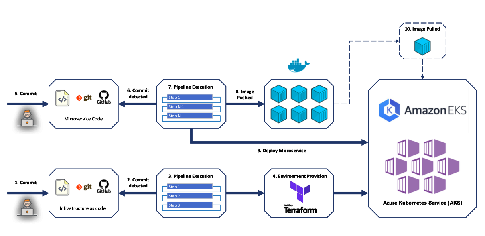
这张图片展示了两个简单的工作流
No 1: 使用 Terraform 和 Azure DevOps 为 Kubernetes 配置基础设施即代码。
No 2: 微服务持续部署: 使用 Azure DevOps 构建部署微服务的 Docker 镜像到 Kubernetes Cluster
听起来很复杂是吗？
让我们试着分解然后再去理解一下。
让我们先从 No 2 – 持续部署开始。
使用 Azure DevOps 和 Jenkins 实现 DevOps 持续部署
如果有出色的测试和代码质量检查但不经常运行它们的话那它们还有什么用呢？
如果你有自动部署但是不常部署软件的话那它还有什么用呢？
只要开发人员提交代码到版本控制系统，下面的步骤就会被执行:
单元测试。
代码质量检查。
集成测试。
应用程序打包 – 推出新的应用程序或者上线新版本的应用程序。
给测试团队发送测试应用程序的邮件
一旦得到了测试团队的允许，应用就立即部署到下一个环境。
这被称作持续部署。如果你持续部署到生产环境，则称作持续交付。
最受欢迎的 CI/CD 工具是 Azure DevOps 和 Jenkins。
No 1 : 使用 Terraform 实现 DevOps 基础设施即代码
过去，我们手动创建环境还有部署应用程序。
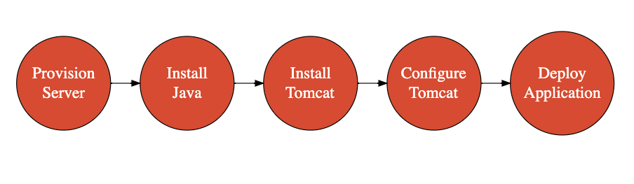
每次创建一个服务器，这些就需要手工做完。
如果 Java 版本需要更新怎么办？
需要应用一个安全补丁吗？
你需要手动做。
结果是什么呢？
非常有可能会出错。
复制环境非常困难。
基础设施即代码
基础设施即代码 – 将基础设施等同于应用代码。
这里有几个理解基础设施即代码比较重要的知识点
基础设施团队专注于能够增值的工作（而不是日常工作）。
更少的错误可以更快的从失败中恢复。
服务器是一致的（避免了 Configuration Drift）。
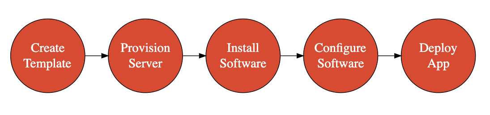
最受欢迎的 IaC 工具是 Ansible 和 Terraform。
一般来说在 IaC 中有这样几步
从一个模板中配置服务器（通过 Cloud 启用）
安装软件
配置软件
服务器配置
一般来说，配置工具用在配置服务器上起到让服务器具备网络功能的作用。最受欢迎的配置工具是 CloudFormation 和 Terraform。
使用 Terraform，你可以配置服务器以及其他的基础设施，比如负载均衡器、数据库、网络配置等。你可以使用类似 Packer 和 AMI（Amazon Machine Image）工具预创建的镜像创建服务器。
配置管理
配置管理用来
安装软件
配置软件
受欢迎的配置管理工具有 Chef、Puppet、Ansible 和 SaltStack。这些被设计用作在已有服务器上安装管理软件。
Docker 和 Kubernetes 在 DevOps 中的角色
Docker 和 Kubernetes 在DevOps 起到的角色是什么样的？
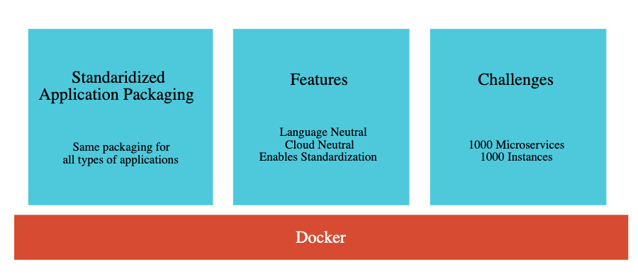
在微服务世界，一些微服务使用 Java 构建的，一部分是用的 Python，一部分是用 JavaScript。
不同的微服务在构建应用程序以及部署到服务器上也是各不相同。
这就让运维团队的工作变得很困难。
我们怎样能找到一个类似的方法可以部署多种类型的应用程序呢？来说说容器和 Docker 吧。
使用 Docker，你可以构建微服务镜像 – 不论语言是什么。你可以运行在任意基础设施上使用相同的方法运行这些镜像。
这样简化了操作。
Kubernetes 在这个基础上添加了编排不同种类的容器和部署它们到集群的功能。
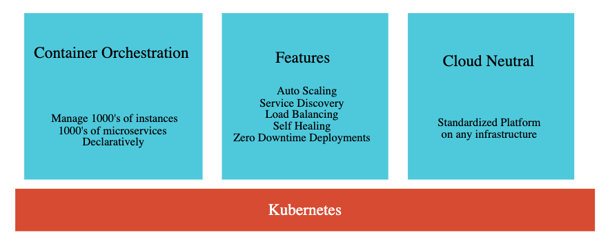
Kubernetes 同样提供了:
服务发现。
负载均衡。
集中配置。
Docker 和 Kubernetes 让 DevOps 更简单。
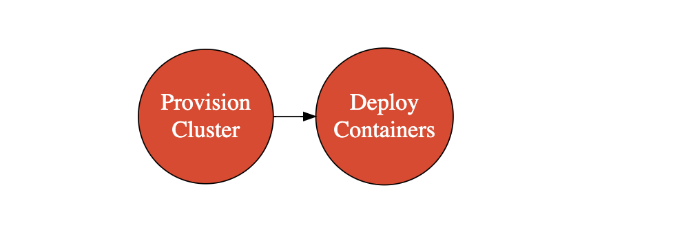
重要的 DevOps 指标
以下是几个你可以在一段时间内跟踪和提升的比较重要的 DevOps 指标项。
部署频率 - 隔多长时间就会部署一次应用程序到生产环境中？
投入市场的时间 - 将一个特性从编码到最终的产品需要耗费多长时间？
新发布版本的失败率 - 多少个发布版本是失败的？
修复时间 - 从需要修复产品问题到发布到生产环境需要多长时间？
平均恢复时间 - 生产环境从一个关键问题中恢复需要多长时间？
DevOps 最佳实践
以下为一些 DevOps 的最佳实践
标准化
有跨部门技能的团队
聚焦文化
自动化，自动化，还是自动化
不变的基础设施
开发生产等同
版本控制所有事物
自行配置
DevOps 成熟的标志
应该怎样度量 DevOps 集成的成熟度呢？这里有一些关键的问题需要解答。
开发
每次提交都会自动触发自动化测试和代码质量检查吗？
你的代码都持续分发到生产环境了吗？
你使用结对编程吗？
你使用 TDD 和 BDD 吗？
你是否有许多复用的模块？
开发团队可以自己配置环境吗？
快速修复生产环境的问题需要耗费多长时间？
测试
你是否使用高质量的类似生产环境的数据执行完整的自动化测试？
当你的自动化测试失败的时候你的构建是失败的吗？
你的测试周期短吗？
你有自动 NFR 测试吗？
部署
你有开发生产等同吗？
你有使用 A/B 测试吗？
你有使用金丝雀部署吗？
你能按下按钮就可以开始部署吗？
你能按下按钮就可以执行回滚吗？
你能按下按钮就可以配置和发布基础架构吗？
你可以为你的基础架构使用 IAC 和版本控制吗？
监控
团队使用的是一个集中监控工具吗？
开发团队可以按下按钮就可以获得日志吗？
生产环境出现问题时团队能自动收到报警吗？
团队和流程
团队看起来是持续改进的吗？
团队是否拥有业务、开发、和运维的全部技能？
团队是否跟踪 DevOps 的关键指标然后去改进它们吗？
你是否使用本地发现并用它们进一步实现全球改进的文化？
DevOps 转换最佳实践
领导力积累至关重要
包括前期成本
设置 COE 以帮助团队
选择正确的应用程序和团队
从小开始
分享学习心得 (时事、沟通、COE)
以探索和自动化的思维方式激励人们
认可 DevOps 团队
在你离开本文之前 – 我们令人惊叹的 DevOps 课程
如果你喜欢这篇文章，你应该也会喜欢我们关于 DevOps 的课程
200+ 视频。
20+ 小时。
6 DevOps 工具 - Docker、Kubernetes、Azure DevOps、Jenkins、Terraform、and Ansible。
3 不同的云平台 - AWS、Azure and Google Cloud。